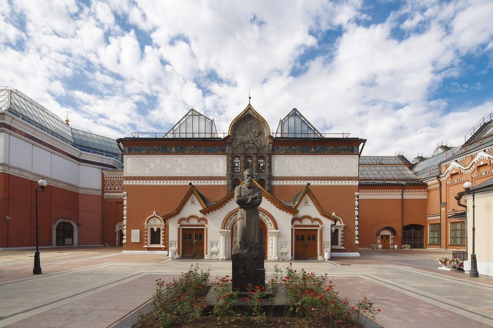
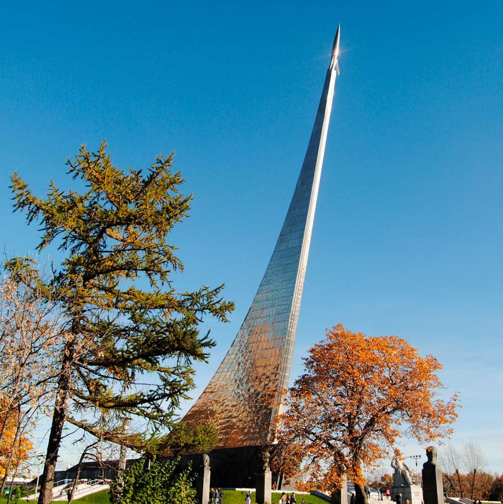
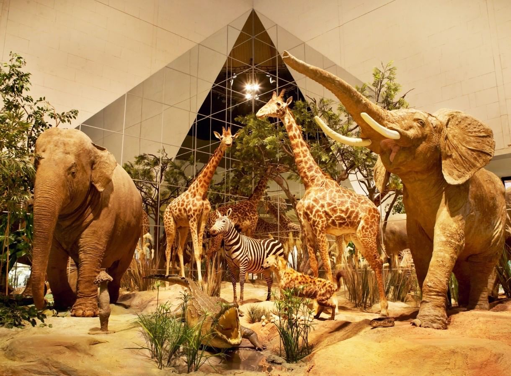

В экспозиции Третьяковской Галереи, основанной в середине 19 века известным российским коллекционером Павлом Третьяковым, представлены произведения лучших русских художников 11 - начала 20 веков
Находится:Лаврушинский переулок, д. 10, Москва Музей космонавтики – один из крупнейших научно-технических музеев мира. История музея началась во второй половине XX века, когда в 1964 году на карте Москвы появился монумент «Покорителям космоса». Титановая ракета на ВДНХ стала символом качественного технологического скачка своего времени. Запуск первого искусственного спутника Земли, первые живые существа и первый человек в космосе стали отправной точкой в мировой космонавтике. Так космос стал ближе к человечеству.
Находится: Проспект мира,111, Москва Один из лучших музеев Москвы, где вы можете провести время со своей семьей в тишине и прохладе залов основной экспозиции или на многочисленных интересных и познавательных выставках. Интерактивные экспонаты и мультимедийные шоу не позволят вам заскучать во время изучения эволюционных теорий и познания растительного и животного мира. Ваши дети смогут найти возможность развлечь себя в экспозиции и втянуть вас в увлекательный процесс получения новых неожиданных знаний.
Находится: ул. Вавилова, 57, Москва 